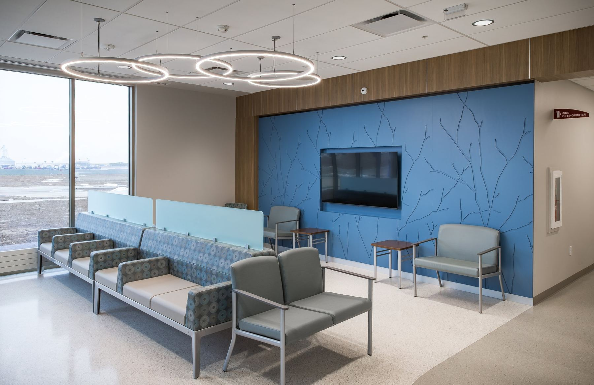
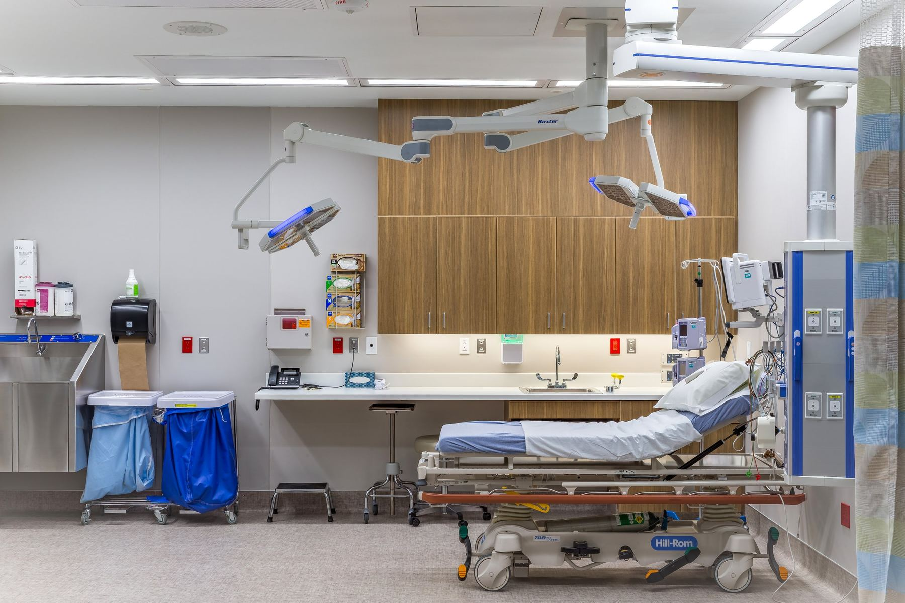
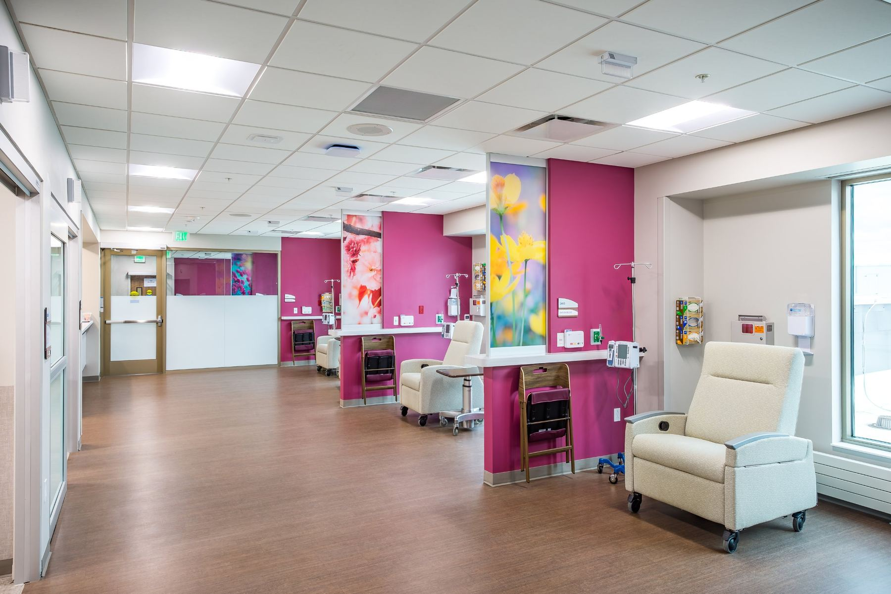
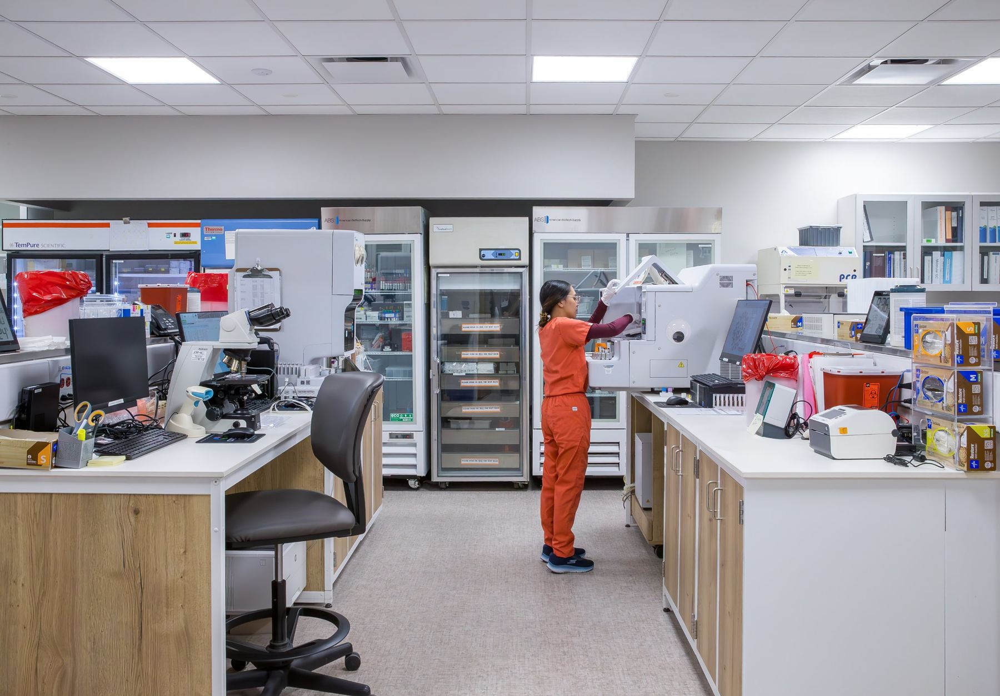

 Hospital · Critical access
Hospital · Critical accessCitizens Medical Center
Emergency care, surgery, imaging, lab, rehab, the Specialty Clinic, and the Maternity Suites, all on our campus in Colby.
- Address
- 1525 S. Franklin Ave.
Colby, KS 67701 - Main line
- (785) 462-7511
- Emergency Room
- Open 24 hours
Emergency Room
Emergency care, day and night
For a life-threatening emergency, call 911.

Our ER provides life-saving treatment for children and adults. Experienced medical professionals are here 24 hours a day for any illness or injury.
Nursing, pharmacy, respiratory therapy, radiology, and laboratory staff are ready to respond at any hour.
Level IV Trauma Center
Credentialed by the Kansas Department of Health and Environment and the American College of Surgeons, and endorsed by the Kansas Advisory Committee on Trauma. We stabilize seriously injured patients and transfer them to a higher-level trauma center when they need more extensive care.
Specialists by telehealth
Our telehealth robot connects ER patients with specialists by live video and audio, and can link to devices like otoscopes and ultrasound. It often lets patients be evaluated here instead of being transferred.
Northwest Kansas Surgical Associates
General surgery
Board-certified surgeons at Northwest Kansas Surgical Associates, inside Citizens Medical Center, provide a full range of surgical services so you can stay close to home.
Procedures for adults and children
- Abdominal surgery
- Appendectomy
- Bowel resection
- Breast care and surgery
- Gallbladder removal (laparoscopic or open)
- Colonoscopy
- Upper endoscopy (EGD)
- Hemorrhoidectomy
- Hernia repair
- Parathyroidectomy
- Skin biopsies and excisions
- Surgical wound care
- Thyroidectomy
- Vascular access
Specialty Clinic
Specialists, without the drive
Explore the Specialty Clinic →
Physicians from across the region and beyond travel to Colby so you can see a specialist close to home.
Specialties
Who's here this week
Specialty Clinic schedule- MonCardiologyVisiting cardiologist
- TueOrthopedicsOrthopedic surgeon
- WedUrologyVisiting urologist
- ThuPodiatryVisiting podiatrist
- FriEar, Nose & ThroatVisiting ENT
Sample schedule. On the live site, this list pulls from the Specialty Clinic's Google Calendar, so it updates whenever staff update the calendar.

Outpatient services
- IV medications
- Injections
- Chemotherapy infusion
- Catheter education and care
- Antibiotic therapy
- Therapeutic phlebotomy
Before your visit
- Arrive at least 15 minutes early
- Ask your primary care provider to send your records ahead of time
- Bring any x-rays, images, or records you have
- Bring a list of your medicines, including over-the-counter medicines, inhalers, and eye drops
Radiology
Imaging

When a blood test or exam doesn't tell the whole story, our imaging team helps your provider find answers with accurate, timely results.
Services
- X-ray
- Fluoroscopy
- CT scans
- CT coronary calcium score
- MRI
- Ultrasound
- Echocardiograms
- Mammography
- Bone density (DEXA)
- Nuclear medicine, Mon–Fri
- Cardiac nuclear stress testing
- PET scans, mobile unit every other week
Laboratory
Lab testing

Our lab helps you and your provider monitor your health and diagnose illness, with accurate, timely results. We test for Citizens Health, outside and specialty providers, Family Center, and Prairie Senior.
Testing
- Basic and complete metabolic panels
- Lipid panel
- Complete blood count
- Glucose
- Pregnancy
- Toxicology screening
- Urinalysis
- Blood type and crossmatch
- Hormone levels
- Serology and immunology
- Drug level monitoring
Employment testing
- DOT and non-DOT drug tests
- Breath alcohol testing
- Post-accident screening
Rehabilitation
Physical, occupational & speech therapy
More about rehab and our team →
Our rehab team helps you keep, regain, or improve the skills you need for daily life.
Physical therapy
Exercise, stretching, and hands-on therapies like massage, heat, cold, and ultrasound to restore movement and function, plus training with walkers and other mobility devices. No referral is needed for a physical therapy evaluation.
Occupational therapy
Help returning to everyday activities after an injury, illness, or disability, including home, work, and school evaluations, adaptive equipment, and caregiver training.
Speech-language pathology
For children and adults: speech sounds, language, voice, stuttering, thinking and communication, social communication, literacy, and feeding and swallowing.
We also treat and offer
- Pre- and post-surgery care
- Joint replacement recovery
- Sports injuries
- Hand therapy
- Tendon repair
- Custom splinting
- Manual therapy
- McKenzie Method
- Postural Restoration (PRI)
- Spine and joint manipulation
- Neurological conditions
- Workers' comp and auto injuries
Programs open to the community
Respiratory Therapy
Heart and lung testing & therapy
More about respiratory therapy →
Our cardiopulmonary team assesses, treats, and educates patients with breathing and heart conditions, working alongside your provider.
Testing
- Pulmonary function testing
- Diffusion studies
- Plethysmography
- Arterial blood gas
- EKG
- Cardiac stress testing (GXT)
- Holter and event monitors
- Six-minute walk test
- Home sleep testing
- Overnight oximetry
- Carbon monoxide monitoring
Treatment
- Inhaled medications
- Oxygen and heliox therapy
- Intrapulmonary percussion
- BiPAP and CPAP
- Non-invasive ventilation
- Ventilator support
- Chest physical therapy
- Bronchiolitis clinic
Citizens Medical Equipment
Home medical equipment
More about medical equipment →
We help you get the equipment you need at home, based on your provider's orders, whether you're a patient in our hospital or already home.
We work with you, your provider, and your insurance company. If insurance doesn't cover an item, you are responsible for the cost.

Maternity Suites
Welcome your baby close to home
Deliver in our Maternity Suites with a team that includes your provider, a nurse for you, and a nurse for your baby. We're a designated Baby-Friendly hospital.
Obstetrics & Maternity SuitesPatients & visitors
Visiting a patient
- If the patient is in isolation, check in at the nurses' station first
- Clean your hands when you enter and leave a patient's room
- Please stay home if you are sick
- Children under 12 must be with an adult
- Cough or sneeze into your elbow
- Cell phones are welcome
- Our campus and buildings are tobacco-free, including e-cigarettes and vaping
Visiting the Maternity Suites? See their visiting guidelines.
Phone directory
Reach a department directly
Not sure who to call? Our main line is (785) 462-7511.
| Admissions | (785) 462-7511 |
|---|---|
| Business Office (billing) | (785) 460-4853 |
| Cardiopulmonary / Respiratory Therapy | (785) 460-1263 |
| Citizens Foundation | (785) 460-1264 |
| Citizens Medical Equipment | (785) 460-1269 |
| Education | (785) 460-1286 |
| Food & Nutrition | (785) 460-1237 |
| Human Resources | (785) 460-4842 |
| Laboratory | (785) 460-1260 |
| Medical Records, Medical Center | (785) 460-4851 |
| Medical Records, Family Center | (785) 460-1710 |
| Medical Staff Services | (785) 460-1713 |
| Nurses' Station, Acute Care | (785) 460-9300 |
| Patient Guest Lounge | (785) 460-4841 |
| Radiology | (785) 460-1250 |
| Rehabilitation | (785) 460-4868 |
| Social Services | (785) 460-4858 |
| Specialty Clinic, scheduling | (785) 460-1223 |
| Specialty Clinic, nursing | (785) 460-1215 |
| Surgery, 24-hour nurse line | (785) 460-1262 |